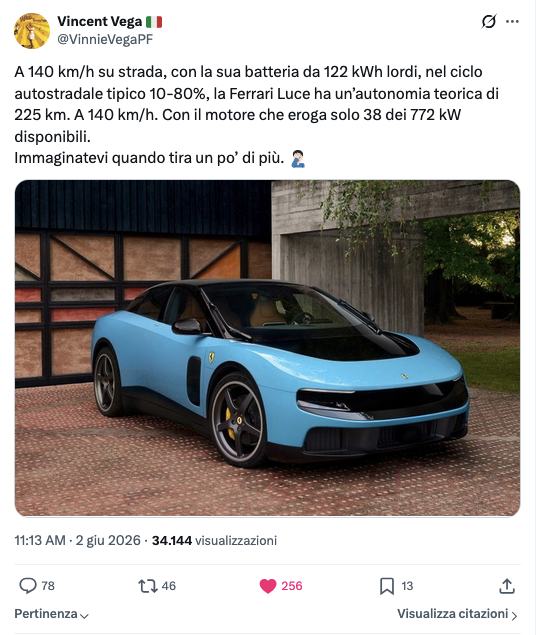

// Raga, Ho Fatto Una Cosa
Sezione 00. Il triggerE' uscita la Ferrari Luce, la prima Ferrari elettrica: 1035 cavalli, 0 a 100 in due secondi e mezzo, 122 kWh, 550 mila euro, disegno di Jony Ive. E poi il finimondo: linea massacrata, meme a valanga, titolo in borsa giu', mezzo paddock a dire la sua. La cronaca della polemica la trovate ovunque, non sto qui a rifarvela.
Una battuta sola me la tengo, perche' me la godo: Carlo Calenda l'ha definita "un insulto estetico e tecnologico per chi ama la Ferrari". Che, tra l'altro, e' probabilmente l'unica cosa detta da Calenda su cui mi sia mai trovato d'accordo.
Per il resto, i gusti sono soggettivi: bella o brutta, fate voi. A me della linea interessa poco. Io sono qui per i numeri, e i numeri, a differenza dei social, non sanno se una macchina e' bella.
Il fatto e' che i numeri da brochure sono come le foto su Instagram: veri, ma scattati nel momento migliore con la luce giusta. E a me piace controllare. Non perche' la Ferrari sia una truffa, ci mancherebbe, ma perche' c'e' una cosa bellissima della fisica: non gliene frega niente di quanto costi la macchina. Le leggi del moto sono le stesse per la Luce da mezzo milione e per la Panda di tua zia.
Tutto e' partito da Vincent Vega: aveva fatto due conti sull'autonomia della Luce, ci siamo scritti, e questo pezzo e' venuto fuori un po' a quattro mani. I suoi parametri di rendimento da una parte, il mio simulatore dall'altra. Da li' la voglia di provare scenari diversi, cambiare le ipotesi e mettere la Luce a confronto con altri veicoli.

Leggi il post originale su X →Il rendimento, spiegato da Vincent. Per passare dai kW "alle ruote" a quelli che tiri davvero dalla batteria si divide per il rendimento complessivo del powertrain: 0,84 (carica/scarica batteria) × 0,92 (azionamento elettronico) × 0,96 (motore) = 0,74. Col suo conto, a 140 km/h e usando il 70% del pacco lordo (la finestra 10-80% dei 122 kWh), viene poco piu' di 230 km (225 nel post, 233 col calcolo dettagliato che mi ha mandato). Sono rendimenti volutamente prudenti: con ipotesi piu' ottimistiche guadagni qualche decina di km, ma l'ordine di grandezza non cambia. Quel 0,74 e' l'estremo basso della banda che uso in tutto l'articolo. Una differenza c'e': Vincent ha stimato una resistenza aerodinamica un po' piu' alta (~38 kW alle ruote a 140), mentre il mio modello parte dal Cx 0,254 ufficiale da record, e quindi qui sotto i km salgono un po'. Per scrupolo abbiamo provato a sbagliare in entrambe le direzioni: assunti piu' prudenti e assunti piu' favorevoli, per vedere quanto il risultato reggesse alle ipotesi. I chilometri si spostano, a volte anche parecchio. L'ordine di grandezza, e la conclusione, molto meno.
Allora ho fatto una cosa. Ho raccattato in giro i dati pubblici di mezza concorrenza, ho riscritto le due formulette che servono, e ho costruito un simulatore con cui giocare. Spoiler: alcuni numeri reggono benissimo, altri sono pura poesia da ufficio marketing.
Tesi. La Ferrari Luce e' spettacolare nei picchi: due secondi e mezzo nello scatto, numeri da prima pagina. Ma appena la metti in autostrada vera la fisica presenta il conto: l'aria si beve tutto e l'autonomia crolla. E su una tratta molto lunga il tempo perso in ricarica puo' annullare gran parte del vantaggio prestazionale. Non e' colpa di Ferrari. E' colpa del cubo.
// Due Formule, Zero Magia
Sezione 01. Tre forze, due formuleA velocita' costante una macchina deve vincere tre cose, niente di piu'. L'aria che la spinge indietro, le gomme che strisciano sull'asfalto, e gli accessori che mangiano corrente (clima, fari, lo schermo gigante). La potenza che serve e' la somma di questi tre pezzi.
Il primo pezzo, la potenza per vincere l'aria, e' il cattivo della storia. Non cresce dritto con la velocita': cresce col suo cubo. (Per i pignoli, e fanno bene: la forza aerodinamica va col quadrato della velocita', ma la potenza per vincerla, quella che ti svuota la batteria, va col cubo. E' la potenza che conta, qui.)
Tradotto per gli amici: ρ e' la densita' dell'aria, Cx il coefficiente di penetrazione aerodinamica (quello che gli inglesi chiamano Cd, stessa cosa) cioe' quanto la macchina e' aerodinamica, A quanto e' larga di muso, e v la velocita'. Quel v³ e' tutto. Vuol dire che se raddoppi la velocita', il solo contributo aerodinamico si moltiplica per otto. Otto. Poi certo, rotolamento ed elettronica crescono piano e ammorbidiscono un po' il totale, quindi nel mondo reale non fai esattamente per otto, ma alle alte velocita' l'aria domina su tutto il resto. Ecco perche' in autostrada l'autonomia si scioglie come un gelato a Ferragosto.
Il secondo pezzo, le gomme, cresce in modo lineare con la velocita': raddoppi l'andatura, raddoppia il contributo. Niente cubo, e infatti pesa in citta' ma alle alte velocita' lo schiaccia l'aria.
E alla fine l'autonomia e' una banalita': quanta energia hai, diviso quanta ne bruci, per la velocita'.
Tutto qui. Nessun segreto industriale: le stesse identiche formule che descrivono la Luce descrivono un Ape Piaggio. La differenza la fanno i numeri che ci infili dentro. E i numeri, a volte, raccontano una storia diversa da quella della pubblicita'.
Parentesi onesta, perche' il credito va dato dove serve. Su quel Cx i compiti li hanno fatti per davvero: la Luce segna 0,254, il valore piu' basso di sempre per una stradale di Maranello. Cinque anni di sviluppo, circa 6000 simulazioni CFD, centinaia di ore in galleria del vento. Hanno spinto al punto da mettere i tergicristalli in verticale ai lati del parabrezza per non sporcare i flussi, e da infilare griglie attive sui radiatori che si chiudono quando non serve raffreddare. Roba seria, niente fuffa.
Nel simulatore qui sotto uso il Cx ufficiale, 0,254. Con un valore cosi' basso, a velocita' di crociera la Luce se la cava benissimo. Il problema arriva quando spingi forte: contro la fisica del cubo non c'e' aerodinamica che tenga, nemmeno la migliore del mondo.
// Dichiarato Contro Reale
Sezione 02. Dove ti fregano (gentilmente)Partiamo dall'autonomia: 529 km dichiarati. Il problema e' come si misura. Il ciclo di omologazione, il famoso WLTP, gira a una media di circa 46 all'ora, clima spento, guida da educante. Roba che in autostrada non vedrai mai. Nel mondo vero, con una macchina da 2260 kg lanciata a 130 costanti, quei 529 km diventano una banda di circa 400-475 km su carica piena, a seconda dello scenario (prudenziale o favorevole). D'inverno col riscaldamento acceso, o spingendo di piu', cala in fretta.
Poi c'e' il trucco piu' bello, quello dei cavalli. 1035 cv, certo. Ma di picco: la potenza massima non e' sostenibile a lungo, diminuisce con la temperatura e con lo stato di carica, perche' a un certo punto intervengono i vincoli termici ed energetici. In pista, dopo pochi giri, la spinta non e' piu' quella del primo. Il limite vero di una elettrica tirata non e' la benzina che finisce, e' il calore che sale.
Mito contro realta'. Le quattro frasi da spot, e cosa c'e' sotto:
• "1035 cv" → sono di picco, non erogabili a lungo.
• "529 km" → solo nel ciclo WLTP, che e' blando; in autostrada vera parecchi meno.
• "ricarica a 350 kW" → e' il picco di un istante, poi la potenza cala.
• "310 km/h" → a quella velocita' la carica piena dura una ventina di minuti (lo vedi qui sotto).
Niente di scandaloso: funziona cosi' per qualunque elettrica. Solo che nello spot non te lo dicono.
// Quanto Dura A 310 All'Ora?
Sezione 03. La domanda che vuoi fare davveroDiciamocelo, chi compra una Ferrari mica la prende per andare a 90 in tangenziale. La domanda vera e': se la tiro al massimo, quanto dura? Mettiamo i numeri nelle formule di prima e usciamo dal seminato.
Niente numeri assoluti: due scenari coerenti. Invece di spacciare un numero per verita', prendiamo due insiemi di ipotesi, uno tutto prudente e uno tutto favorevole (ma plausibile), e guardiamo quanto balla il risultato. E' uno stress test del modello, non un confronto di opinioni.
| Parametro | Prudenziale | Favorevole |
|---|---|---|
| Area frontale | 2,46 m² | 2,30 m² |
| Rendimento powertrain | 74% | 84% |
L'area 2,46 m² e' la stima geometrica standard (circa 0,8 × larghezza 1,999 m × altezza 1,544 m), il 2,30 m² e' l'ipotesi favorevole.
Non sono due misure della stessa auto: sono due insiemi di assunzioni usati per stressare il modello e vedere quanto cambiano i risultati. Non una previsione, ma due estremi plausibili. La realta' sta probabilmente nel mezzo.
Abbiamo provato a tirare i parametri da entrambe le parti.
I numeri si muovono. Il cubo resta dov'e'.
Il 74% non e' buttato li': e' la scomposizione 0,84 × 0,92 × 0,96 (carica/scarica batteria × azionamento elettronico × motore), con lo 0,84 della batteria gia' di per se' conservativo. Se i chilometri cambiano ma l'ordine di grandezza resta, la conclusione e' robusta rispetto alle ipotesi: e infatti e' cosi'. In piu' separo "carica piena" (tutto il pacco, ~110 kWh) da "tratta 10-80%" (tra due ricariche, ~77 kWh). Nel simulatore l'area e' fissa al valore favorevole e muovi solo il rendimento; qui lo scenario prudenziale alza anche l'aerodinamica.
Il cubo che si mangia la batteria
| Velocita' | Potenza richiesta | Carica piena | Tratta 10-80% |
|---|---|---|---|
| 130 km/h | 30-36 kW | 400-475 km | 280-335 km |
| 140 km/h | 36-42 kW | 365-430 km | 255-300 km |
| 200 km/h | 87-105 kW | 210-250 km | 145-175 km |
| 250 km/h | 160-192 kW | 145-170 km | 100-120 km |
| 310 km/h | 292-352 kW | 95-117 km | 68-82 km |
Ogni cella e' un intervallo tra i due scenari: estremo basso = prudenziale (area 2,46 m², rendimento 74%), estremo alto = favorevole (area 2,30 m², rendimento 84%). "Carica piena" usa tutto il pacco (~110 kWh), "tratta 10-80%" e' quanto percorri tra due ricariche (~77 kWh). Cx 0,254 dichiarato; l'area frontale e' stimata: 2,46 m² e' la stima geometrica standard (circa 0,8 × larghezza 1,999 m × altezza 1,544 m), 2,30 m² e' l'ipotesi favorevole.
Leggi la tabella e fermati un attimo. Passando da 130 a 310 la velocita' sale del 138 per cento, ma l'autonomia crolla di circa il 75 per cento. E succede pure col Cx da record: l'aria non guarda il listino. Curiosita': a 310 servono dalla batteria circa 290-350 kW (a seconda dello scenario), ben sotto i 772 di picco. Vuol dire che non e' la potenza il limite, e' prima il calore e poi la batteria che si svuota. A 310 km/h, secondo questa simulazione, la carica piena si esaurisce in circa 19-23 minuti (stima del modello, non un dato ufficiale Ferrari).
// E Gli Altri? (Spoiler: Tesla)
Sezione 04. Il confronto che bruciaHo preso le rivali piu' cattive e le ho messe sullo stesso tavolo. Ma il numero che conta non e' la potenza, quella e' roba da bar. Il numero che conta e' l'efficienza: quanti km ti regala ogni kWh di batteria. E' li' che si vede chi ha fatto ingegneria e chi ha solo messo una batteria piu' grossa.
Efficienza: km di autonomia WLTP per ogni kWh
| Auto | Batteria | Peso | Potenza | WLTP | km per kWh |
|---|---|---|---|---|---|
| Ferrari Luce | 122 kWh | 2260 kg | 1035 cv | 529 km | 4,34 |
| Tesla Model S Plaid | 100 kWh | 2265 kg | 1033 cv | 611 km | 6,11 |
| Porsche Taycan Turbo GT | 97 kWh | 2290 kg | ~1100 cv | 528 km | 5,44 |
| Rimac Nevera | 120 kWh | 2150 kg | 1914 cv | 490 km | 4,08 |
Guarda la Tesla. Ha 22 kWh di batteria in meno della Ferrari, e fa 82 km in piu' di autonomia dichiarata. Con meno la fai di piu'. La Luce, in classifica efficienza, arriva terza, dietro Tesla e Porsche.
Per onesta'. Una parte dell'autonomia della Luce arriva dalla batteria grossa, piu' che da un vantaggio chiaro in efficienza. E' una scelta legittima, eh: Ferrari ha puntato su capacita', potenza assoluta e raffreddamento, non sul record di consumi. Nessuno compra una Ferrari per risparmiare. Pero' "rivoluzionaria sull'autonomia" proprio no: nei dati WLTP disponibili oggi Tesla resta il riferimento in termini di efficienza.
// Adesso Gioca Tu
Sezione 05. Il simulatoreBasta tabelle, qui ti passo il giocattolo. Sotto c'e' il Race Lab: scegli un percorso, scegli le macchine, smanetta con velocita', temperatura, vento, passeggeri, clima e rendimento del powertrain, e guarda autonomia e consumi ricalcolarsi dal vivo. C'e' pure la gara animata: le auto avanzano sul tragitto e chi deve ricaricare si ferma davvero. Non e' un oracolo: e' un modello semplificato che serve a vedere la sensibilita' ai parametri, non a prevedere il chilometro esatto. Tutto gira nel tuo browser, nessun server, nessuna chiave, nessun dato che esce da qui.
1 · Percorso
Percorsi e profili altimetrici fatti da noi: nessuna API, nessuna chiave, nessun backend. Tutto gira in locale nel browser.
2 · Veicoli
Seleziona i contendenti e gioca con i parametri.
3 · Condizioni
I risultati si aggiornano in tempo reale.
4 · Gara tra modelli
Tutti partono pieni e percorrono lo stesso tragitto alle stesse condizioni. Il tempo include le soste.
| Veicolo | Arrivo | kWh/100km | Recuperata | Soste | Tempo | Autonomia |
|---|
5 · Grafici
6 · 🏁 La corsa
Le auto avanzano sul tragitto scelto. Chi si ferma a ricaricare resta fermo per tutta la sosta. Premi START.
7 · Metodo e assunzioni
Tutto quello che c'e' sotto il cofano. Le ipotesi si possono discutere (e' giusto cosi'), la trasparenza no.
Il modello fisico
Per ogni segmento, prima la forza resistente totale (tre contributi):
F = ½ · ρ · Cx · A · v² (aria) + Crr · m · g (rotolamento) + m · g · sinθ (pendenza)
poi la potenza alle ruote, che e' forza per velocita':
P = F · v → il termine aerodinamico diventa cosi' ½ · ρ · Cx · A · v³ (il cubo)
L'energia che esce dalla batteria = lavoro meccanico / rendimento + ausiliari. In discesa e in frenata si recupera energia (fino al 65%, limitato dalla potenza di rigenerazione dell'auto).
Costanti e ambiente
- Densita' aria ρ = 1,225 · 288,15/(T+273,15) kg/m³ (cambia con la temperatura dello slider)
- Coeff. rotolamento Crr = 0,0105 · g = 9,81 m/s²
- Ausiliari: 300 W di base; riscaldamento sotto i 18°C, raffrescamento sopra i 24°C; clima +1,5 kW se acceso
- Vento: entra nella resistenza aerodinamica come (v + vento)²
- Recupero in discesa/frenata: 65%, limitato dalla potenza regen dell'auto
Rendimento del powertrain (lo slider)
E' la catena batteria → ruote. Banda 74%–84%. Il 74% rappresenta l'estremo prudenziale del modello, ottenuto dalla scomposizione 0,84 (carica/scarica batteria) × 0,92 (azionamento elettronico) × 0,96 (motore). L'84% e' un powertrain moderno in condizioni favorevoli. Default 79%, perche' la realta' sta nel mezzo.
Ricarica e soste
- Si parte a batteria piena (energia utilizzabile, non lorda).
- Si ricarica solo l'energia che serve per arrivare con il 10% di riserva, non un 70% fisso a ogni sosta.
- Potenza media di ricarica = min(potenza max dell'auto, 350 kW) × 0,55. Il cap a 350 kW evita di assumere colonnine da 500 kW ovunque.
- Al massimo ~70% di pacco per singola sosta.
- Stessa velocita' di crociera per tutte: il tempo di guida e' identico, a fare la differenza sono solo le soste.
Parametri dei veicoli (fonti pubbliche)
| Auto | kWh lordi/utili | Peso | Cx | A (m²) | Ricarica | Regen |
|---|---|---|---|---|---|---|
| Ferrari Luce | 122 / 110 | 2260 | 0,254 | 2,30 | 350 kW | 500 kW |
| Tesla Model S Plaid | 100 / 96 | 2265 | 0,208 | 2,34 | 250 kW | 300 kW |
| Porsche Taycan Turbo GT | 105 / 97 | 2290 | 0,27 | 2,33 | 320 kW | 290 kW |
| Rimac Nevera | 120 / 107 | 2150 | 0,30 | 2,10 | 500 kW | 400 kW |
L'area frontale non e' dichiarata dalle case. La stima geometrica standard (circa 0,8 × larghezza 1,999 m × altezza 1,544 m) da' ~2,46 m²; il simulatore usa il valore favorevole 2,30 m², mentre nell'articolo lo scenario prudenziale sale a 2,46. La potenza di ricarica della Nevera (500 kW) nel calcolo e' capata a 350 kW per realismo infrastrutturale. I valori possono ballare un po' tra le fonti: l'auto e' nuova.
Cosa il modello NON fa
- Percorsi e profili altimetrici sono modellati da noi, non rilevati col GPS.
- La curva di ricarica reale non e' piatta: qui e' approssimata con una potenza media.
- Niente traffico, code, semafori, soste caffe', degrado della batteria, stile di guida.
- Consumo a velocita' costante: niente accelerazioni e frenate ripetute.
In una riga: serve a mostrare la sensibilita' ai parametri e gli ordini di grandezza, non a prevedere il chilometro esatto. Tutto dichiaratamente ipotetico, dati pubblici.
Il modello e' fisico ma semplificato: i percorsi e le altimetrie li ho costruiti io (plausibili, non rilevati col GPS). Non serve a prevedere il chilometro esatto, ma a mostrare quanto i risultati dipendono dalle ipotesi: muovi il rendimento, la velocita' o il vento e guarda tutto cambiare. Tutto dichiaratamente ipotetico.
// Sui Mille Chilometri Il Vantaggio Si Scioglie
Sezione 06. Il viaggio lungoUltimo giro nel simulatore: il Gran Premio. Milano Barcellona, 1015 km di autostrada vera, tutte le elettriche da urlo alla stessa velocita' di crociera, 130. A parita' di velocita' il tempo di guida e' identico per tutte, quindi a decidere chi arriva prima restano solo le soste.
E qui l'aerodinamica ha gia' fatto il suo lavoro: a 130 reali quelle autonomie da brochure si riducono a poche centinaia di km per carica (gli intervalli li trovi sopra). Su mille km vuol dire fermarsi a ricaricare una o due volte, una ventina di minuti a sosta. Tempo morto, fermi, attaccati alla colonnina, mentre l'orologio gira.
Il punto, senza provocazioni. Su tratte molto lunghe il vantaggio prestazionale di una elettrica si riduce drasticamente, perche' il tempo perso in ricarica puo' superare ampiamente il vantaggio guadagnato nelle accelerazioni. I due secondi e mezzo nello 0 a 100 non ti restituiscono la mezz'ora passata a una stazione di ricarica. Provalo da te qui sopra: scegli Milano Barcellona e guarda quanto pesano le soste sul tempo totale.
Non e' una bocciatura dell'auto elettrica, sia chiaro. E' una fotografia di oggi: la ricarica costa tempo e l'infrastruttura non e' ancora pronta per i grandi numeri. Ne ho parlato in lungo e in largo quando ho provato a calcolare quanto costerebbe davvero elettrificare l'Italia: la rete non regge il picco, le colonnine vanno in coda infinita. E se ti interessa quanto e' complicato anche solo il prezzo di un litro di benzina, ne ho scritto in La Benzina Ha Un Modello (non c'entra un cazzo, ma ce lo metto lo stesso).
E qui sta la parte davvero interessante. Non e' che Ferrari abbia sbagliato: probabilmente ha fatto quasi tutto giusto. Cx da record, motori derivati dalla F1, batteria enorme, cinque anni di galleria del vento. Eppure il cubo vince lo stesso. Perche' non esiste ingegneria, per quanto buona, che batta una legge fisica. La puoi solo assecondare, mai fregare.
L'autonomia la decide l'aria.
E l'aria non si compra, nemmeno da Ferrari."
Tutti i numeri sono pubblici. Tutto il resto e' fisica delle superiori e un pomeriggio di codice.
// Le Carte In Tavola
Fonti. Tutti i dati, tutti i linkNiente numeri tirati a caso. Ecco da dove ho raccattato tutto. Le specifiche sono quelle dichiarate dalle case o riportate da database pubblici (a volte ballano un po' tra una fonte e l'altra, e' normale, l'auto e' nuova). I conti di autonomia, derating e ricarica sono stime mie sul modello fisico, non dati ufficiali Ferrari.
- SpuntoVincent Vega, il post che ha fatto partire tutto
- Ferrari LuceFerrari.com, pagina ufficiale Luce
- Ferrari LuceFerrari.com, sezione engineering
- Ferrari LuceWikipedia, Ferrari Luce
- BatteriaBattery Design, dettaglio celle e pacco
- Ferrari LuceElectrek, specifiche al reveal
- Ferrari LuceAutocar, Ferrari Luce revealed
- Ferrari LuceMotor1, specifiche e prezzo
- AerodinamicaIl Messaggero, aerodinamica e propulsori
- AerodinamicaNewsauto, Cx 0,254 e i tergicristalli verticali
- AerodinamicaDrive Authority, Cd 0.254 senza ala attiva
- TeslaEVKX, Tesla Model S Plaid
- TeslaEV Database, Model S Plaid
- PorscheEV Database, Taycan Turbo GT
- RimacWikipedia, Rimac Nevera
- LotusWikipedia, Lotus Evija
- PolemicheQuattroruote, reazioni social e critiche di Montezemolo
- PolemicheAutomoto.it, la bordata di Briatore
- PolemicheFanpage, perche' la Luce e' criticatissima
- PolemicheAutomotive News, il backlash e il calo in borsa
- PolemicheInsideEVs, "everyone seems to hate it"
- ApprofondimentoL'Italia Non Ha La Spina, perche' la rete non regge
- ApprofondimentoLa Benzina Ha Un Modello, il prezzo del carburante
Disclaimer: questo e' un esercizio di fisica e curiosita', non una recensione e non una consulenza d'acquisto. I numeri reali dipendono da mille cose che il modello non vede. Servono a ragionare sugli ordini di grandezza, non a decidere cosa comprare.